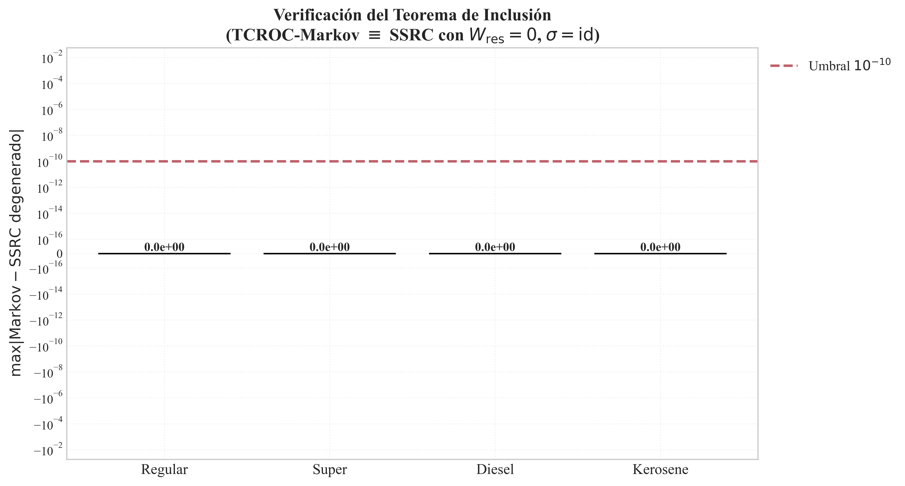
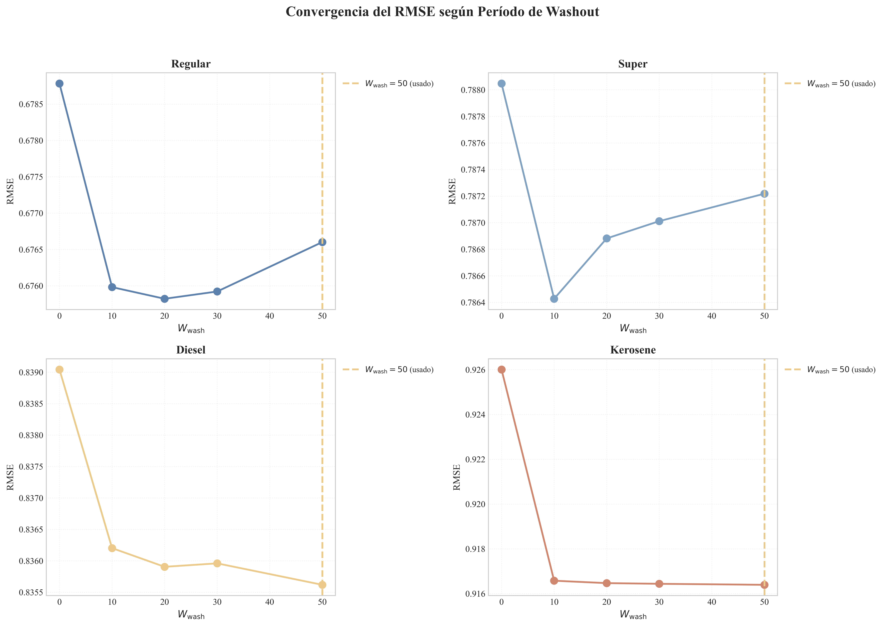
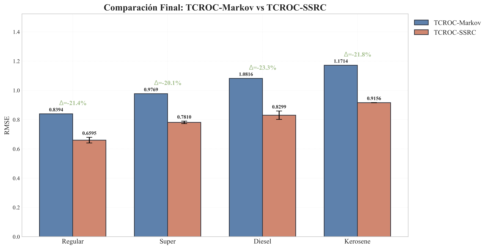
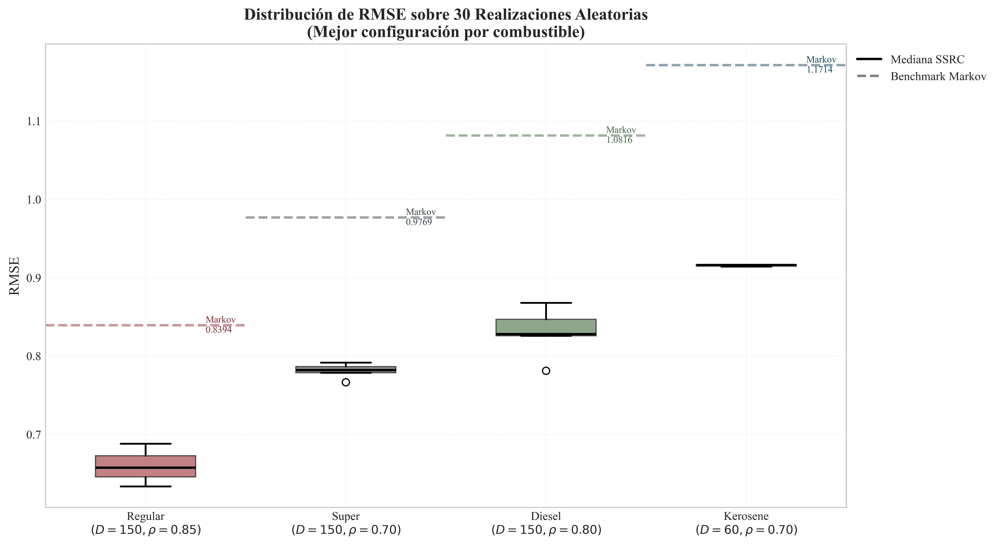
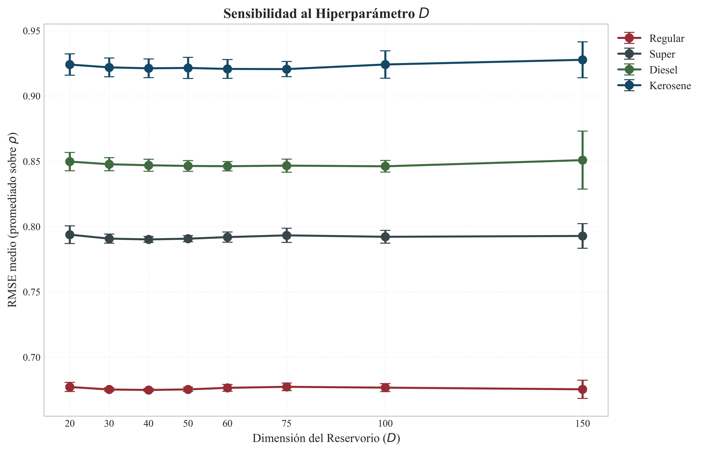
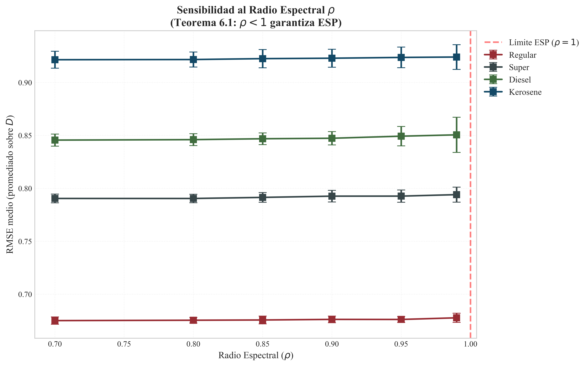
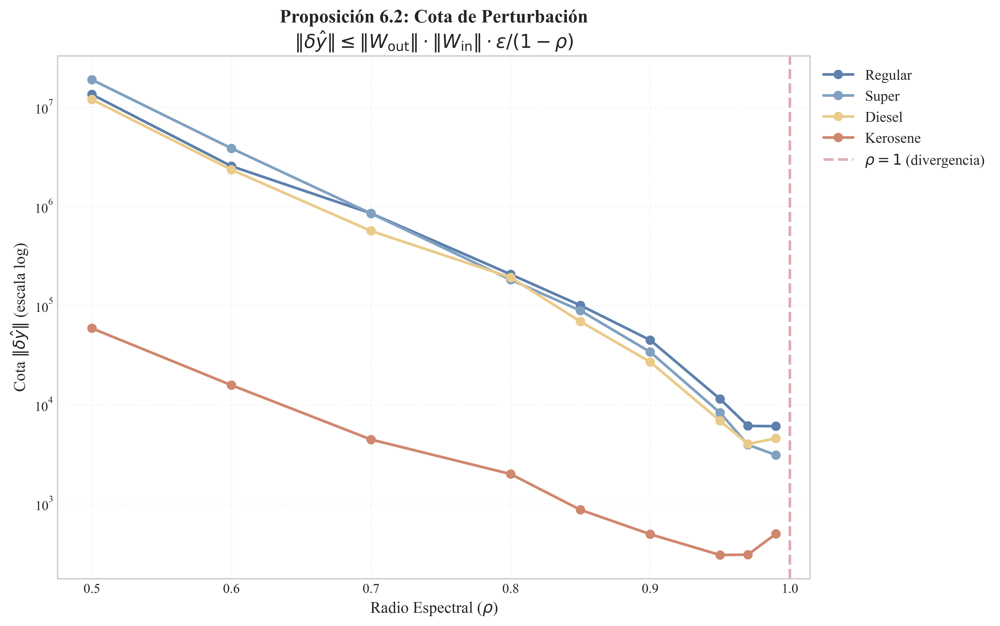

Figura 6.1. Los pasos 1-2 (extraccion TCROC) y 4 (estimacion NNLS) son identicos. La diferencia esta en el paso 3: K-Means discreto vs reservorio recurrente continuo.
Guia de estudio y preparacion para evaluacion
El reservorio funciona como una fabrica con 3 etapas:
| Matriz | Tamano | Se entrena | Que hace |
|---|---|---|---|
| W_in | 150 x 1 | No, fija | Puerta de entrada. Toma el unico dato de la semana (alfa_t) y lo reparte entre las 150 neuronas. Como 1 manguera repartida en 150 cubetas. |
| W_res | 150 x 150 | No, fija | Conexiones internas. Define como las neuronas se hablan entre si. Como 150 personas en un salon: W_res dice quien le habla a quien y con que fuerza. |
| W_out | 1 x 150 | Si (NNLS) | Capa de lectura. Asigna un peso de importancia a cada neurona para la prediccion. Es la UNICA parte que se optimiza. |
| Simbolo | Que es | Ejemplo |
|---|---|---|
| u_t | La entrada: el valor de alfa_t (tasa de cambio TCROC) de esa semana | "El diesel subio 0.3%" = u_t = 0.003 |
| h_t | El estado interno: un vector de 150 numeros que representa lo que el reservorio "recuerda" en la semana t | h_t = [0.23, -0.45, 0.87, ..., 0.34] |
| y_t+1 | La prediccion: el precio pronosticado para la proxima semana | y = 89.50 Lempiras |
Funcion que aplasta cualquier numero al rango [-1, +1]:
Se usa por 3 razones:
1. Acota los valores. Sin tanh, los numeros podrian explotar al multiplicarse repetidamente por W_res. La tanh los mantiene siempre entre -1 y +1.
2. Introduce no-linealidad. Sin ella, multiplicar matrices una y otra vez da resultado lineal. La tanh permite capturar relaciones curvas (la curvatura de la Figura 6.13).
3. Es Lipschitz con constante 1. Significa que |tanh(a) - tanh(b)| <= |a - b|. Nunca amplifica diferencias, solo las reduce. Esto es lo que garantiza la ESP.
| Funcion | Sirve | Problema |
|---|---|---|
| tanh | Si | La estandar. Rango [-1, +1], Lipschitz = 1 |
| sigmoid | Si | Funcionaria, pero rango [0, 1], pierde valores negativos |
| ReLU | No | No acota por arriba, puede explotar |
| Identidad (lineal) | Parcial | Sin no-linealidad, SE REDUCE al modelo Markoviano |
Garantia de que el reservorio "olvida" de donde empezo. No importa la condicion inicial h_0; despues de unos pasos la salida depende SOLO de los datos de entrada.
Formalmente: para cualesquiera dos condiciones iniciales h_0 y h'_0, la diferencia ||h_t - h'_t|| tiende a 0 cuando t tiende a infinito.
Se garantiza con una condicion simple: rho(W_res) menor que 1. Esto hace que la influencia de h_0 decaiga exponencialmente. Los rho optimos en la tesis son 0.70-0.85, bien por debajo de 1.
ESN con memoria controlable. En vez de reaccionar 100% al dato nuevo, el reservorio mezcla lo nuevo con su estado anterior:
h_t = tanh(W_in · u_t + W_res · h_{t-1})
h_t = (1-a) · h_{t-1} + a · tanh(W_in · u_t + W_res · h_{t-1})
| Valor de a | Comportamiento | Analogia |
|---|---|---|
| a = 1.0 | ESN estandar. 100% reaccion nueva | Espejo: refleja solo lo que tiene enfrente AHORA |
| a = 0.5 | Mitad memoria, mitad nuevo | Promedio movil: suaviza |
| a = 0.1 | 90% memoria, 10% nuevo | Tanque grande: cambios graduales |
La version especifica de la tesis. Combina activacion tanh, matrices aleatorias (de ahi lo "estocastico"), y capa de lectura por NNLS. Tres hiperparametros: dimension D, radio espectral rho y factor de fuga a. El termino fue propuesto por Banegas y Vides (2025).
Resultado central del capitulo. Si en el SSRC fijamos la matriz del reservorio en cero, la activacion en identidad y la fuga en 1, recuperamos exactamente el modelo Markoviano del capitulo anterior:
Es una identidad algebraica verificada con error 0.0 en las cuatro series. No 0.00001, no 10^{-15}... cero exacto.
El teorema de Grigoryeva y Ortega (2018): los reservorios con ESP pueden aproximar cualquier funcional causal continuo sobre secuencias. Cualquier relacion razonable entre historial de precios y precio futuro, el reservorio la puede aprender con suficientes neuronas.
Figura 6.1. Los pasos 1-2 (extraccion TCROC) y 4 (estimacion NNLS) son identicos. La diferencia esta en el paso 3: K-Means discreto vs reservorio recurrente continuo.
Los dos marcos comparten la fase inicial (extraer alfa_t de la serie de precios) y la fase final (estimar pesos por NNLS). Lo que cambia es el paso intermedio: el modelo Markoviano discretiza alfa_t en estados (bajista, estable, alcista) mediante K-Means, mientras que el SSRC lo proyecta a un espacio continuo de alta dimension mediante el reservorio.
La ventaja: el reservorio retiene memoria continua de las ultimas semanas en su vector de estado, lo que le permite distinguir no solo en que regimen esta el mercado, sino como llego ahi. El modelo Markoviano no puede hacer eso porque al discretizar pierde la trayectoria.

Figura 6.2. Verificacion numerica del teorema de inclusion. Diferencia maxima entre TCROC-Markov y SSRC degenerado: exactamente 0.0 para las cuatro series.
Antes de evaluar predicciones, hay que verificar que las condiciones matematicas se cumplen. Las cuatro series satisfacen la ESP y la condicion de rango completo.

Figura 6.4. Autovalores de W_res dentro del circulo unitario (linea negra). Radios optimos moderados (0.70 a 0.85).

Figura 6.8. El RMSE se estabiliza desde 10-20 pasos de washout. Se uso 50 por margen de seguridad.

Figura 6.3. Mapas de calor del RMSE en la grilla (D, rho). Recuadro negro = configuracion optima.
| Serie | D* | rho* | a* | RMSE SSRC | RMSE Markov | Mejora |
|---|---|---|---|---|---|---|
| Regular | 150 | 0.85 | 0.1 | 0.660 | 0.839 | -21.4% |
| Super | 150 | 0.70 | 0.3 | 0.781 | 0.977 | -20.1% |
| Diesel | 150 | 0.80 | 0.1 | 0.830 | 1.082 | -23.3% |
| Kerosene | 60 | 0.70 | 1.0 | 0.916 | 1.171 | -21.8% |
Regular y Diesel optimizan con a = 0.1 (mucha inercia, filtro lento). Super con a = 0.3. Kerosene con a = 1.0 (sin inercia, ESN pura), coherente con su mayor volatilidad y sus 5 regimenes.

Figura 6.6. El SSRC (naranja) sigue mejor los puntos de inflexion que el modelo Markoviano (verde).

Figura 6.11. Mejora consistente del 20-23% en las cuatro series.

Figura 6.7. Las 30 realizaciones del SSRC quedan TODAS por debajo del benchmark Markoviano (linea punteada). Cajas estrechas = robustez.

Figura 6.8. La diferencia entre D=20 y D=150 es menor al 0.5%. La ganancia se satura rapido.

Figura 6.9. Mas memoria (rho alto) no beneficia. Valores optimos moderados.

Figura 6.10. Cota teorica sobreestima la inestabilidad real por varios ordenes de magnitud.
Estas dos figuras responden a una pregunta central: ¿el reservorio (SSRC) "entiende" los regimenes economicos que K-Means encontro? La respuesta es si, y estas figuras lo demuestran visualmente.

Figura 6.12. Proyeccion PCA de h_t coloreada por regimenes de K-Means. Cuatro paneles, uno por combustible.
Cada punto es un instante de tiempo (una semana) de la serie de precios. Hay 4 paneles: Regular, Super, Diesel y Kerosene.
| Eje | Significado |
|---|---|
| PC1 (eje X) | Primera componente principal del vector de estado h_t |
| PC2 (eje Y) | Segunda componente principal del vector de estado h_t |
El reservorio tiene D = 150 dimensiones (o 60 para Kerosene). PCA reduce esas dimensiones a solo 2 para poder visualizarlas. Es como tomar una foto de un objeto tridimensional desde el angulo que capta mas informacion.
Los colores NO fueron asignados por el reservorio. Son los regimenes que K-Means identifico en el capitulo anterior:
| Color | Regimen | Significado economico |
|---|---|---|
| Verde/Amarillo | Regimen 1 | Caida de precios |
| Rojo | Regimen 2 | Estabilidad / leve baja |
| Azul | Regimen 3 | Alza moderada |
| Morado (si aplica) | Regimen 4-5 | Alza fuerte |
Lo central: los puntos del mismo color se agrupan juntos y los de diferente color se separan. El reservorio, sin que nadie le dijera que regimen es cada semana, organizo internamente la informacion de forma que los regimenes quedan separados naturalmente.
1. Los clusters se separan geometricamente. Cada regimen ocupa una "zona" distinta del espacio. El reservorio codifica los regimenes en su representacion interna de alta dimension.
2. Las trayectorias entre clusters son suaves (curvas, no saltos). Las transiciones entre regimenes se mapean como movimiento continuo y gradual, como si los precios "viajaran" suavemente de una zona a otra.
3. Las formas curvadas (paraboloides, espirales) son la huella de la funcion tanh del reservorio. Esa no-linealidad es lo que da al SSRC su ventaja sobre el modelo Markoviano lineal: puede "doblar" el espacio para separar mejor los regimenes.
4. Los puntos en la frontera entre dos colores son semanas de transicion, cuando el mercado estaba cambiando de un regimen a otro.

Figura 6.13. Relacion entre retorno TCROC (alfa_t) y activacion promedio del reservorio, coloreada por regimenes.
Cada punto es una semana. Se grafican dos cosas directamente (sin PCA):
| Eje | Significado |
|---|---|
| Eje X: alfa_t (retorno) | La tasa de cambio relativa calculada por TCROC. Es el "retorno" semanal del combustible. |
| Eje Y: h_t promedio (activacion) | El promedio de las 150 (o 60) neuronas del reservorio en esa semana. |
Los colores son los mismos regimenes de K-Means que en la Figura 6.12.
La pregunta que responde: ¿el reservorio reacciona de forma coherente a los cambios de precio? Para entender el patron, este es el esquema:
1. Relacion monotona (creciente). Cuando alfa_t es negativo (precio bajo), la activacion del reservorio es negativa. Cuando alfa_t es positivo (precio subio), la activacion es positiva. El reservorio preserva el orden dinamico: caida, estabilidad, alza.
2. Los colores se ordenan de izquierda a derecha. En el extremo izquierdo (alfa_t mas negativo): Regimen 1 (caida). En el centro (alfa_t cercano a 0): Regimen 2 (estabilidad). En el extremo derecho (alfa_t mas positivo): Regimenes 3-4 (alza). El reservorio entiende el orden de los regimenes, no solo los clasifica como categorias sin estructura.
3. La relacion es CURVA, no recta. Esta es la observacion mas importante desde la perspectiva matematica. Si la relacion fuera una linea recta, significaria que el reservorio no aporta nada, el modelo lineal (Markov) ya captaria todo. Pero la curvatura (forma de S o sigmoide) indica que el reservorio captura estructura no lineal que el Markoviano no puede representar.
La curvatura viene de la funcion tanh() dentro del reservorio:
h_t = (1-a) · h_{t-1} + a · tanh(W_in · alfa_t + W_res · h_{t-1})

Figura 6.14. Regimenes del SSRC superpuestos a la serie de precios original.
Los cambios de color de fondo coinciden con los puntos de inflexion del mercado (caida de 2020, recuperacion posterior). El SSRC mantiene la interpretabilidad economica de los regimenes a pesar de operar en un espacio continuo de alta dimension.
| Pregunta | Fig. 6.12 (PCA) | Fig. 6.13 (alfa_t vs activacion) |
|---|---|---|
| Que muestra | Los estados internos del reservorio en 2D | La relacion entrada-salida del reservorio |
| Que valida | Que los regimenes se separan naturalmente en el espacio del reservorio | Que la activacion es coherente con los retornos y regimenes |
| Por que importa | Confirma que el SSRC preserva interpretabilidad a pesar de la alta dimension | La no-linealidad (curvatura) es la fuente de la mejora del 20-23% en RMSE |
| Hallazgo clave | Clusters separados + trayectorias suaves | Relacion monotona + curvatura (no es recta) |
1. ¿Bajo que norma vectorial funciona la prueba de la ESP? ¿Que cambia con norma-2 vs norma-infinito?
Funciona bajo norma-2 (euclidiana). tanh es Lipschitz con constante 1 componente a componente, y eso se traduce en una cota con norma-2 para el vector completo. La transicion a convergencia exponencial usa la formula de Gelfand, que conecta la norma espectral (sigma_max) con el radio espectral (max |lambda_i|) de forma asintotica.
Con norma-infinito la prueba tambien funciona pero la cota sale mas holgada, porque ||W_res||_inf (suma maxima de fila) suele ser mayor que ||W_res||_2.
2. ¿Un ejemplo de funcional sobre precios que el reservorio NO pueda aproximar?
El supremo historico: H({u_t}) = max de todos los u_s hasta t. Depende de toda la historia con igual peso; un cambio minusculo en una entrada lejana puede cambiar el resultado. No es continuo en la topologia del producto, y el teorema de aproximacion universal lo excluye.
En la practica no importa: la dinamica de combustibles tiene memoria finita. El mercado "olvida" shocks despues de cierto horizonte, asi que los funcionales relevantes si son continuos.
3. ¿Por que no se exploraron radios espectrales mayores que 1?
Primero: con rho menor que 1, la ESP se verifica constructivamente; con rho mayor que 1 depende de la distribucion de entradas y no se puede verificar a priori. Segundo: la Figura 6.9 muestra que el RMSE sube al acercarse a 0.99, ir mas alla no tiene sentido. Tercero: combustibles hondurenos son mercado regulado con ajustes semanales pequenos; la senal no tiene la complejidad que justificaria operar al borde de la inestabilidad.
4. K-Means es discontinua. ¿Como entra en la definicion del RC que usa activacion suave?
El Teorema 6.4 no dice que el caso degenerado sea un RC estandar con propiedades de suavidad. Dice que las ecuaciones del modelo Markoviano se recuperan algebraicamente al fijar ciertos parametros. La discontinuidad de K-Means queda encapsulada en W_in, mientras sigma = identidad (suave). Es una relacion de inclusion algebraica, no topologica.
5. ESP instantanea implica cero memoria. ¿No contradice la motivacion del capitulo?
No. Hay que distinguir dos memorias: la del reservorio (h_t que depende de h_{t-1}; en el caso degenerado es cero) y la del operador TCROC (alfa_t que ya contiene un promedio ponderado de las ultimas W semanas). La motivacion del capitulo es agregar una segunda capa de memoria encima de la que alfa_t ya tiene. Cuando esa segunda capa es nula, se recupera el modelo anterior. Cuando se activa (a menor que 1, W_res distinto de cero), se obtiene la ganancia del 20-23%.
6. Los numeros de condicion kappa(H) son del orden de 10^9. ¿Como se justifica la estabilidad?
kappa ~ 10^9 es preocupante en teoria. La justificacion viene de tres frentes.
Evidencia empirica: la Figura 6.7 muestra que las 30 realizaciones producen RMSE consistente. Si el condicionamiento causara problemas, habria outliers o dispersion alta.
Geometria de la restriccion: NNLS obliga w >= 0, eliminando el semiespacio negativo. En problemas mal condicionados sin restricciones, la solucion oscila entre valores positivos y negativos grandes. La no negatividad lo impide.
Ensemble: las 30 realizaciones tienen matrices aleatorias distintas con condicionamientos distintos. El promedio diluye el efecto particular de cada una.
7. En la cota de perturbacion, ¿la norma espectral y el radio espectral son lo mismo?
No. La norma espectral es sigma_max (mayor valor singular). El radio espectral es max |lambda_i| (mayor autovalor en modulo). Siempre rho(A) <= ||A||_2, con igualdad solo si la matriz es normal (AA* = A*A).
Paso a paso se necesita la norma espectral. En el resultado final aparece rho_res como simplificacion asintotica (via Gelfand). Es una cota ligeramente optimista paso a paso, pero el argumento de convergencia es valido.
8. Con 240 configuraciones evaluadas, ¿no hay riesgo de sobreajuste?
Se usa particion fija temporal (semanas 1-312 entrenamiento, 313+ test), no validacion cruzada. K-fold no aplica a series temporales porque mezcla futuro con pasado.
La grilla selecciona la mejor configuracion sobre 5 realizaciones (no 1), reduciendo varianza. Las 30 realizaciones finales son independientes de la seleccion. 240 configuraciones es modesto comparado con 390 datos.
9. ¿Por que washout = 50 y no otro numero?
Teoria: con rho = 0.85 y precision de 10^{-6}, la convergencia toma unos 85 pasos. Pero lo que importa no es precision de maquina sino que el transitorio no afecte las predicciones.
Empiria (argumento mas fuerte): la Figura 6.8 muestra que el RMSE se estabiliza desde los 10-20 pasos. El valor de 50 es conservador. Con 20 bastaria. Practica estandar en la literatura (Lukosevicius y Jaeger, 2009).
10. ¿Por que Kerosene necesita solo D=60 mientras las demas usan D=150?
Estructura, no ruido. Kerosene tiene 5 regimenes pero su factor optimo es a = 1.0 (sin inercia). Con a = 1, el estado se sobreescribe por completo en cada paso, generando estados mas decorrelados. La matriz H tiene mejor condicionamiento con dimension menor.
Ademas, Kerosene es la serie mas volatil: alfa_t varia mas, generando estados mas diversos naturalmente. La Figura 6.8 lo confirma: la curva de Kerosene es la mas plana de las cuatro.
11. ¿Cuales son las condiciones KKT del NNLS? ¿Cuantas componentes de w terminan activas?
Cuatro condiciones: estacionariedad (H(H'w* - y) = mu), factibilidad primal (w* >= 0), factibilidad dual (mu >= 0), y complementariedad (mu_i * w*_i = 0).
La complementariedad dice: si w*_i es positiva (activa), su multiplicador mu_i es cero. Si w*_i es cero (inactiva), el multiplicador puede ser positivo.
Con D=150, solo unas 30-50 componentes son activas. La dimension efectiva del modelo es mucho menor que 150. NNLS funciona como selector automatico de features, una regularizacion L0 implicita sin parametro de penalizacion.
12. ¿Por que NNLS y no Ridge Regression (Tikhonov), que es lo estandar en reservorios?
Tikhonov controla la norma de w con un parametro lambda. NNLS restringe w al ortante positivo. Tres ventajas de NNLS:
Interpretabilidad: el pronostico es combinacion positiva de estados del reservorio. Componentes negativas en W_out significarian que ciertos filtros "cancelan" la prediccion, sin sentido para precios positivos.
Sin hiperparametro extra: Tikhonov agrega lambda al espacio de busqueda ya grande.
Consistencia: los capitulos 2 a 5 usan NNLS. La Tabla 6.2 muestra que NNLS supera a Ridge en las cuatro series.
13. ¿Que algoritmo resuelve el NNLS? ¿Converge en tiempo finito?
Lawson-Hanson (1974), implementado en scipy.optimize.nnls. Converge en un numero finito de iteraciones (a lo sumo D). Es metodo de pivoteo, no iterativo como gradiente descendente. Con D=150, cada llamada toma milisegundos.
14. Los estados h_t viven en R^D con tanh. ¿La imagen forma una variedad? ¿De que dimension?
Con a = 1, la imagen esta en (-1,1)^D. Con a menor que 1, subconjunto compacto de R^D.
La entrada es escalar (alfa_t en R), asi que la trayectoria {h_t} esta confinada a una variedad de dimension mucho menor que D. Las proyecciones PCA de la Figura 6.12 lo confirman: 2 componentes capturan la mayor parte de la varianza. La variedad intrinseca tiene dimension ~2-3, coherente con K=3-5 regimenes.
La alta dimension D no es porque la senal sea compleja; es para que la capa de lectura lineal pueda separar la estructura.
15. El teorema de aproximacion universal opera sobre U^{Z_-}. ¿Es completo este espacio? ¿Importa?
Con topologia del producto: completo (U compacto), compacto (Tychonoff), metrisable (Z_- numerable). La compacidad es condicion necesaria del teorema. Un funcional continuo sobre espacio compacto es uniformemente continuo (Heine-Cantor), y eso permite la aproximacion uniforme.
En nuestro caso, U es compacto porque alfa_t tiene rango finito (precios regulados). La condicion se cumple sin suposiciones artificiales.
16. ¿Se puede ver el reservorio como operador en un espacio de Banach? ¿Que propiedades tiene?
Si. Define un operador T: l^inf(Z_-, R^d) a l^inf(Z_-, R^m). Propiedades: causal (y_t depende solo de entradas pasadas), invariante en el tiempo, acotado (tanh acotada), Lipschitz con constante ||W_out|| ||W_in|| / (1 - rho), y no lineal.
El teorema de aproximacion universal dice que el conjunto de estos operadores T es denso en el espacio de operadores causales, invariantes y continuos.
17. La unicidad de W_out requiere rango(H) = D. Con ruido numerico, ¿como garantizarlo?
Genericamente: el conjunto de matrices (W_in, W_res) con rango(H) menor que D tiene medida de Lebesgue cero. Con probabilidad 1, rango = D.
En la practica, el rango numerico podria ser menor. Con kappa ~ 10^9, perturbacion de 10^{-6} en datos podria dar perturbacion de 10^3 en w. La restriccion w >= 0 previene que esa amplificacion se manifieste. Los resultados empiricos muestran baja variabilidad entre realizaciones.
18. La ESP dice ||h_t - h'_t|| tiende a 0. ¿Es convergencia fuerte o debil?
En R^D (dimension finita), todas las normas son equivalentes. Convergencia fuerte = debil = por componentes. La distincion no aplica.
En dimension infinita (kernels de reservorio) si importa: fuerte implica debil pero no al reves. Los resultados de Grigoryeva y Ortega requieren ESP en sentido fuerte, que es lo que la tesis usa.
| # | Tema | Riesgo | Respuesta |
|---|---|---|---|
| 6 | kappa(H) ~ 10^9 sin cota formal para NNLS | Alto | 30 realizaciones estables + ortante positivo. Reconocer como trabajo futuro. |
| 12 | NNLS vs Tikhonov | Alto | Geometria del cono, interpretabilidad, sin hiperparametro extra, consistencia. |
| 7 | Norma espectral vs radio espectral | Medio | La cota usa simplificacion asintotica. Tener version con sigma_max lista. |
| 11 | KKT y componentes activas | Medio | Solo 30-50 de 150 son activas. NNLS = selector implicito. |
| 17 | Rango numerico vs exacto | Medio | Genericidad (medida cero). Restriccion w >= 0 amortigua. |
"El Teorema 6.4 establece una relacion de inclusion algebraica, no topologica."
"La restriccion de no negatividad restringe la solucion al ortante positivo, actuando como regularizacion geometrica."
"La compacidad de U es condicion necesaria del Teorema 6.3, y se satisface naturalmente por la regulacion del mercado."
"Los estados del reservorio viven en una variedad de baja dimension intrinseca embebida en R^D."
"La convergencia es asintotica por Gelfand; la cota paso a paso requiere la norma espectral, no el radio."
"NNLS es equivalente a Tikhonov con lambda cero y la restriccion adicional w mayor o igual que cero."
Si la pregunta toca un punto sin respuesta exacta, reformular en terminos de operadores o geometria convexa. Reconocer limitaciones con propuestas de trabajo futuro siempre es mejor que intentar justificar algo que no se sostiene.